器材库 > APS及其以下画幅可换镜头数码相机 > EOS 760D/EOS 750D
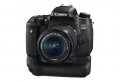
规格总览
产品类型
APS画幅可换镜头数码相机
发布日期
2015-02-10
影像规格
影像传感器
CMOS
影像传感器尺寸
约22.3×14.9毫米
总像素
2470万
有效像素
2420万
影像处理器
DIGIC 6
低通滤镜
有
最大解像度
约2400万像素（6000×4000）
静态图像格式
JPEG, RAW, RAW+JPEG
短片尺寸
1920×1080（全高清）：30p/25p/24p 1280×720（高清）：60p/50p/30p/25p
短片格式
MPEG4-AVC/H.264
短片音效
具备内置立体声麦克风 外接立体声麦克风端子 可调节录音电平、具备风声抑制功能、具备衰减器功能
除尘系统
自动、手动、添加除尘数据
镜头和对焦
镜头卡口
Canon EF
兼容镜头
佳能EF系列镜头（包括EF-S※镜头，不包括EF-M镜头）
对焦系统类型
TTL辅助影像重合，相位检测
对焦点
19点（最多19个十字型自动对焦点）
对焦模式
单次自动对焦、人工智能自动对焦、人工智能伺服自动对焦、手动对焦
AF辅助灯
有
手动对焦
支持
曝光控制
测光系统
7560像素 RGB+红外 测光感应器 63区TTL全开光圈测光
测光模式
中央重点测光, 多分区评价测光, 点测光, 局部测光
测光范围
EV 1 ～ 20 （23℃、ISO 100）EV
曝光模式
Auto, P（程序自动曝光）, A（光圈优先自动曝光）, S（快门速度优先自动曝光）, A-TTL程序闪光AE
快门类型
电子控制焦平面快门
快门速度
1/4000至30秒（支持所有拍摄模式）、B门
闪光同步速度
1/200秒
曝光补偿
±5EV以以1/3或1/2级为单位调节EV级调整
自动曝光锁
有
自动包围曝光
在±2级间以1/3或1/2级为单位调节
ISO感光度
可扩展至100-25600
连拍
最高5fps
闪光灯
内置闪光灯
弹出式
闪光模式
E-TTL II
闪光指数
约12（ISO 100，以米为单位）
闪光补偿
±2EV以以1/3级或1/2级为单位调节EV级调整
取景器/显示屏
取景器
眼平五面镜
取景范围
95%
取景放大倍率
约0.82倍（-1m-1，使用50mm镜头对无限远处对焦）倍
对焦屏
固定式、精确磨砂
反光镜
即时返回型
反光镜锁定
有
景深预视
有
LCD类型
彩色TFT LCD
LCD尺寸
3.0英寸
LCD像素
104万
视野率
100%
LCD特性
触摸屏, 翻转屏
Live View
有
Live View 对焦模式
Hybrid CMOS AF III （面部+追踪、自由移动多点、自由移动1点）、手动对焦（可进行约5倍、10倍放大确认）
文件输入/输出
存储卡
SD/SDHC, SDXC
视频/音频接口
MIC 输入, HDMI Mini 输出
无线功能
Wi-Fi, NFC
支持打印协议
PictBridge
电源
电池
电池LP-E17
续航能力
使用取景器拍摄： 23℃时约440张、0℃时约400张 使用实时显示拍摄： 23℃时约180张、0℃时约150张
机身规格
颜色
黑色
尺寸
约131.9×100.9×77.8mm
重量
约565（CIPA方针） 约520（仅机身）g
该产品暂无存档的网友点评
产品图 / 样片
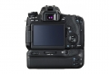
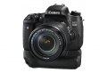
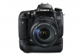
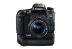
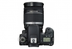
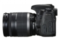
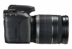
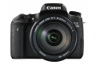
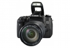
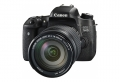
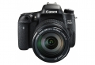
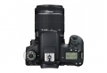
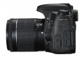
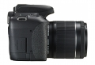
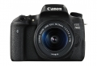
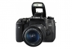
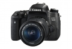
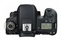
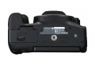
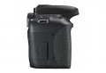
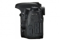

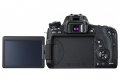
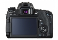

评测 / 相关文章
- 详细内容 （存档）
- 入门新霸主 佳能EOS 760D详细评测 （存档）
- ［行情］佳能EOS 750D/760D上市销售 （存档）
- ［行情］夏日扫街新伴侣 EOS 750D/760D火热来袭 （存档）
- ［试用］佳能EOS 760D实拍样张 （存档）